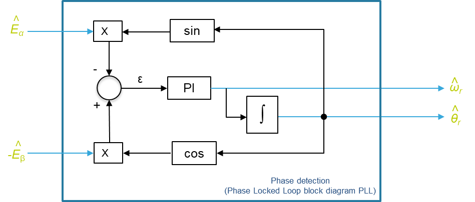

|
STM32 Motor Control SDK MCFW-6.1.0
Software Development Kit to build applications driving PMSM Motors with STM32
|
Loading...
Searching...
No Matches
|
STM32 Motor Control SDK MCFW-6.1.0
Software Development Kit to build applications driving PMSM Motors with STM32
|
The MCSDK firmware library provides a complete solution for the sensorless motor control.
The method is based on the motor Back-EMF estimation by using a Luenberger state observer combined with a phase detection algorithm (as seen in block diagrams below):
The measured currents \(i_{\alpha}\), \(i_{\beta}\) and the feeding voltages , \(v_{\alpha}\), \(v_{\beta}\) are used as input of state observer to estimate the motor back-EMF which contains the information on the rotor magnet position and therefore the speed according to the following statements:
\(\hat{E}_\alpha= |\hat{E}|\cos{\hat{\theta_r}}\)
\(\hat{E}_\beta= -|\hat{E}|\sin{\hat{\theta_r}}\)
\(|\hat{E}| = \sqrt{\hat{E}_\alpha^2 + \hat{E}_\beta^2}\)
\({\hat{\theta_r}} = {\hat{\theta_{r0}}} + \int_{t_0}^t \mathrm{\hat{\omega_r}}(\tau)\,\mathrm{d}\tau\)
Where \(\hat{E}_\alpha\), \(\hat{E}_\beta\) represent estimated B-EMF of the motor and \( |\hat{E}| = K_e\hat{\omega}_r\) its amplitude.
\(\hat{\omega}_r\) and \(\hat{\theta_r}\) represent respectively the motor electrical speed and the associated electrical angle.
At each FOC period (in current loop control) the estimated B-EMF vector \({\hat{E}_{\alpha\beta}}\) must be processed by a phase-detection algorithm in order to extract the information of the rotor magnet position and speed. As described in the block diagrams the rotor speed parameter is also provided as a feedback signal to the STate Observer itself.
Starting from a motor model, a Luenberger-like observer is used to track the motor back-EMF. Then the position and speed information can be properly extracted through the use of a phase-detection algorithm.
Hence, the differential equations describing the back-EMF observer of the estimator presented in block diagram above can be stated as follows:
$$X′(t)=AX(t)+Bu(t)+K(y(t)-Y(t))$$
\(\frac{d\hat{I}_{\alpha,\beta}(t)}{dt}= - \frac{Rs}{Ls} \hat{I}_{\alpha,\beta}(t)- \frac{\hat{E}_{\alpha,\beta}(t)}{ Ls } + \frac{ v_{\alpha,\beta}(t)}{ Ls } + {\color{green}{K_1}} [i_{\alpha,\beta}(t) - \hat{I}_{\alpha,\beta}(t)] \)
\(\frac{d\hat{E_\alpha}(t)}{dt}= \omega_r \hat{E_\beta}(t) + {\color{green}{K_2}} [i_\alpha (t)- \hat{I_\alpha}(t)] \)
\(\frac{d\hat{E_\beta}(t)}{dt}= -\omega_r \hat{E_\alpha}(t) + {\color{green}{K_2}}[i_\beta(t)- \hat{I_\beta}(t)] \)
To switch from continuous to discrete time, need to apply the sampling time period (specified as T)
Expression of Estimated Currents:
\(\hat{I}_{\alpha,\beta}(n+1)-\hat{I}_{\alpha,\beta}(n) = -\frac{Rs }{ Ls }.T.\hat{I}_{\alpha,\beta}(n)- T.\frac{ \hat{E}_{\alpha,\beta}(n)}{ Ls } + T.\frac{ v_{\alpha,\beta}(n)}{ Ls } + {\color{green}{K_1}}.T.[i_{\alpha,\beta}(n) - \hat{I}_{\alpha,\beta}(n)] \)
\(\hat{I}_{\alpha,\beta}(n+1) = \hat{I}_{\alpha,\beta}(n) -\frac{Rs }{ Ls }.T.\hat{I}_{\alpha,\beta}(n)- T.\frac{ \hat{E}_{\alpha,\beta}(n)}{ Ls } + T.\frac{ v_{\alpha,\beta}(n)}{ Ls } + {\color{green}{K_1}}.T.[i_{\alpha,\beta}(n) - \hat{I}_{\alpha,\beta}(n)] \)
\(\hat{I}_{\alpha,\beta}(n+1) = \hat{I}_{\alpha,\beta}(n) - {\color{blue}{C_1}}.\hat{I}_{\alpha,\beta}(n)- {\color{blue}{C_3}}. \hat{E}_{\alpha,\beta}(n) + {\color{blue}{C_5}} .v_{\alpha,\beta}(n) + {{\color{green}{C_2}}}.[i_{\alpha,\beta}(n) - \hat{I}_{\alpha,\beta}(n)]\)
Identification of constants \(\color{blue}{C_1, C_2, C_3, C_5}\) used in estimated currents:
\({\color{blue}{C_1}} = F_1.\frac{Rs }{ Ls }.T\)
\({\color{blue}{C_3}} =F_1.\frac{MAX\_BEMF\_VOLTAGE}{MAX\_CURRENT} \frac{T}{LS}\)
\({\color{blue}{C_5}} = F_1.\frac{MAX\_VOLTAGE}{MAX\_CURRENT}\frac{T}{LS}\)
and \({{\color{green}{C_2}}} = F1.{\color{green}{K_1}}.T\) : with \({{\color{green}{C_2}}}\) = Gain1 computed by ST Motor Control Workbench in section "Speed Sensing / Observer".
Expression of Estimated Back-EMF:
\(\hat{E_\alpha}(n+1) = \hat{E_\alpha}(n) + T.\omega_r .\hat{E_\beta}(n) + {\color{green}{K_2}}.T. [i_\alpha(n) - \hat{I_\alpha}(n)]\)
\(\hat{E_\beta}(n+1) = \hat{E_\beta}(n) - T.\omega_r .\hat{E_\alpha}(n) + {\color{green}{K_2}} .T. [i_\beta(n) - \hat{I_\beta}(n)]\)
\(\hat{E_\alpha}(n+1) = \hat{E_\alpha}(n) + T.\omega_r .\hat{E_\beta}(n) + {{\color{green}{C_4}}}.[i_\alpha(n) - \hat{I_\alpha}(n)]\)
\(\hat{E_\beta}(n+1) = \hat{E_\beta}(n) - T.\omega_r .\hat{E_\alpha}(n) + {{\color{green}{C_4}}}.[i_\beta(n) - \hat{I_\beta}(n)]\)
With the constant \(\color{green}{C_4}\) equal to:
\({{\color{green}{C_4}}} = F_2.\frac{MAX\_CURRENT}{MAX\_BEMF\_VOLTAGE}{\color{green}{K_2}}.T\) : with \({{\color{green}{C_4}}}\) = Gain2 computed by ST Motor Control Workbench in section "Speed Sensing / Observer".
As shown here the tuning of the observer is allowed only via Gain1 and Gain2 gains which are pre-computed by ST Motor Control Workbench (as described below).
Initial values of gains \( {\color{green}{K_1}}\) and \( {\color{green}{K_2}}\) are based on motor parameters \(R_s\), \(L_s\) and \(T\) (which is the sampling time of the sensorless algorithm, which coincides with FOC and stator currents sampling).
The motor model eigenvalues could be calculated as:
\(e_1 = 1 - \frac{R_sT}{L_s}\)
\(e_2 = 1\)
The observer eigenvalues are placed with:
\(e_{1obs} = \frac{e_1}f\)
\(e_{2obs} = \frac{e_2}f\)
As a rule of the thumb, set \(f = 4\);
The initial values of \({\color{green}{K_1}}\) and \({\color{green}{K_2}}\) are then calculated:
\({\color{green}{K_1}} = \frac{(e_{1obs} + e_{2obs}) - 2}{T} - \frac{R_s}{L_s}\)
\({\color{green}{K_2}} = \frac{L_s(1 - e_{1obs} - e_{2obs} + e_{1obs}e_{2obs})}{T^2}\)
Then Gain1 and Gain2 are computed by applying an appropriated scaling ( \(F_1\) & \(F_2\) ) and the maximum ranges of functionality defined by the following constants: MAX_CURRENT, MAX_VOLTAGE and MAX_BEMF_VOLTAGE (computed internally by the ST Motor Control Workbench according to the project definition).
This procedure is followed by the ST Motor Control Workbench to calculate proper state observer gains.
Phase Locked Loop (PLL)
The basic principle of this algorithm refers to a quadrature phase detector and involves the generation of an error signal from the phase difference between a couple of quadrature input signals corresponding to the couple ( \({\hat{E}_{\alpha}}\) , \({\hat{E}_{\beta}}\) ) and the corresponding quadrature feedback functions of the estimated angle \(\hat{\theta_r}\) as shown in block diagram below:

The error signal ( \({\epsilon}\) ) is corrected through a Proportional Integral (PI) regulator to provide the estimated speed \(\hat{\omega}_r\) and after integration the estimated electrical angle \(\hat{\theta}_r\).
Estimated B-EMF expression:
\(\hat{E}_\alpha=K_e\tilde{\omega}_r\cos{\tilde\theta_r}\)
\(\hat{E}_\beta=-K_e\tilde{\omega}_r\sin{\tilde{\theta_r}}\)
\(K_e\) represents the Back-EMF constant and \(\tilde{\omega}_r, \tilde{\theta}_r\) the pulsation and the phase angle of the estimated Back-EMF.
Then according to the block diagram of PLL, the math expression of the error signal \({\epsilon}\) is:
\({\epsilon} = -\hat{E}_\alpha.sin\hat{\theta}_r - \hat{E}_\beta.cos\hat{\theta}_r \)
And by replacing the expression of estimated Back-EMF it becomes: \({\epsilon} = -K_e\tilde{\omega}_r\cos{\tilde\theta_r}.sin\hat{\theta}_r + K_e\tilde{\omega}_r\sin{\tilde{\theta_r}}.cos\hat{\theta}_r \) By applying the trigonometric formula: sin(a-b) = sin(a).cos(b) - sin(b).cos(a)
The equation of the error can be factorized to: \({\epsilon} = K_e\tilde{\omega}_r\sin(\tilde\theta_r - \hat{\theta}_r) \)
With \(\tilde\theta_r\), representing the input reference while \(\hat\theta_r\) corresponds to the feedback signals (ie estimated electrical angle).
For small deviations between those angles, the error expression can be approximated to: \( \mathbf{{\epsilon\approx K_e\tilde{\omega}_r(\tilde\theta_r - \hat{\theta}_r) }}\)
A Proportional Integrator (PI) regulator is used to ensure that the estimated electrical angle \(\hat\theta_r\) converge to the phase angle of the input B-EMF signal \(\tilde\theta_r\) (by keeping the error \({\epsilon} \) = 0)
CORDIC
CORDIC (COordinate Rotation DIgital Computer) is a cost-efficient successive approximation algorithm for evaluating math functions like trigonometric functions.
Current mcsdk library offers a software implementation of atan function : \(\hat\theta_r =atan( \frac{-\hat{E}_\beta}{\hat{E}_\alpha})\)
And in G4 series, in order to reduce the SW computation time a CORDIC co-processor is available supporting several mathematical functions including all trigonometric functions.
The electrical angle based on the estimated back-EMF components is then extracted instantaneously, but this method is more sensitive to the quality and the level of the waveforms.